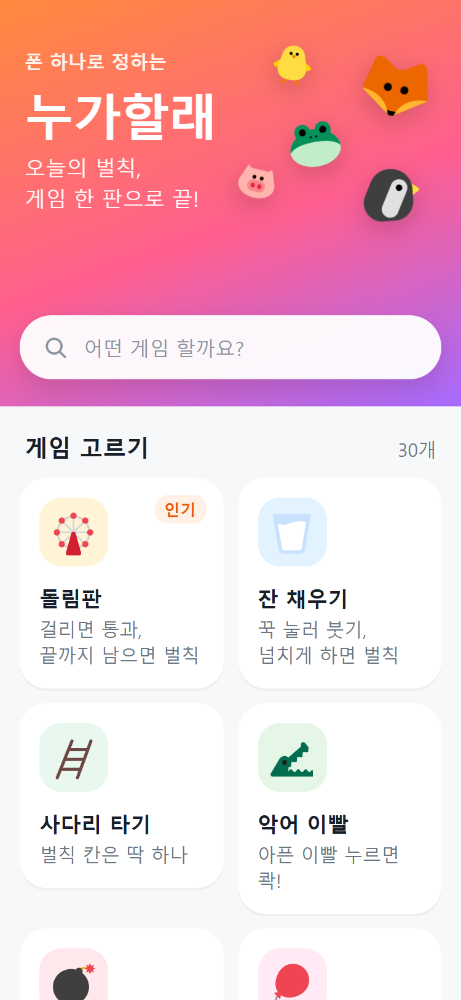
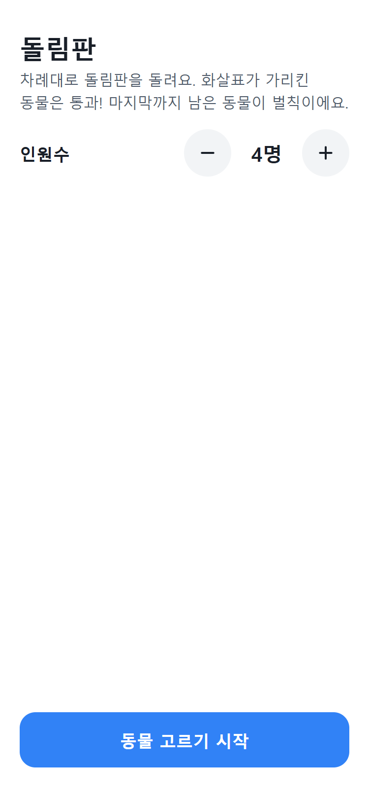
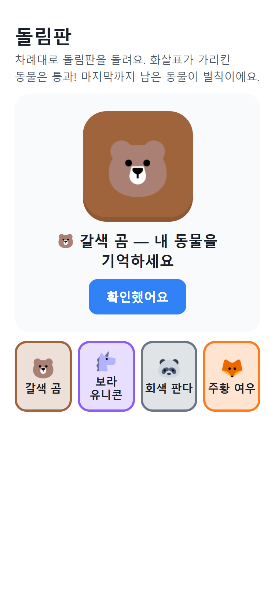
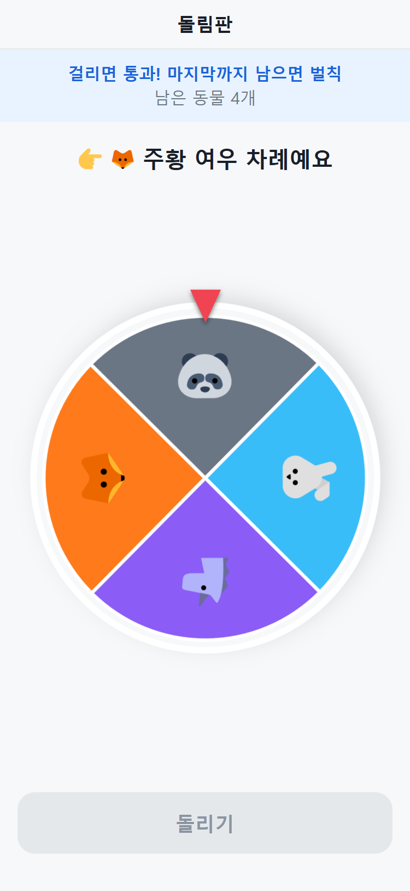
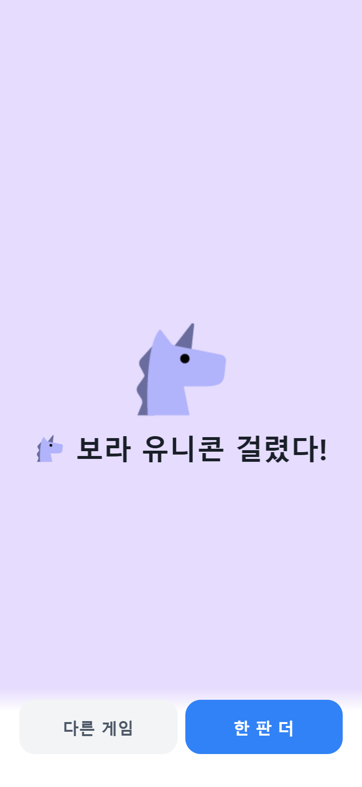
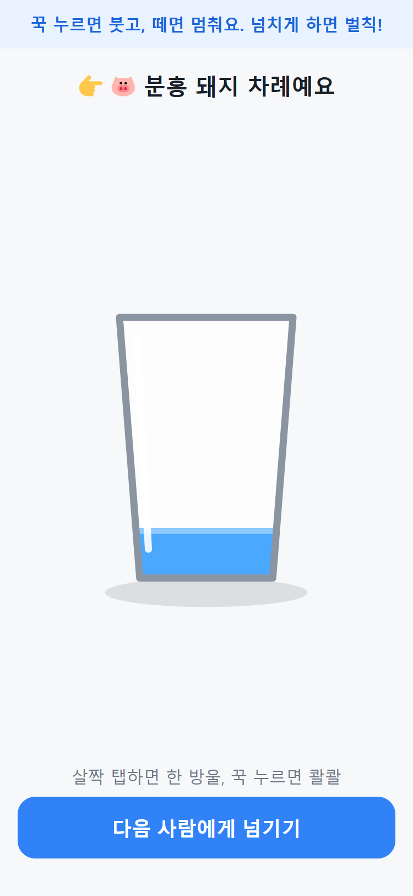
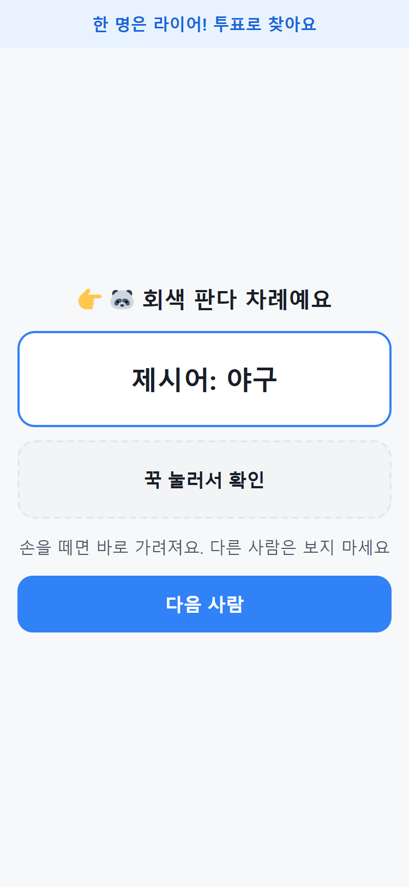

사소한 선택 하나에도 즐거움을 느끼고 싶다
매번 가위바위보. 결과는 금방 나오지만 아무 재미가 없어요.
재미있는 방법을 쓰려면 게임을 준비해 다니고, 무엇을 할지부터 골라야 해요.
로그인도, 입력할 것도 없어요







로직은 화면과 떼어 놓고, 플랫폼 호출은 실패해도 멈추지 않아요
앱인토스가 사행성 콘텐츠를 허용하지 않아서, 기획 단계에서 콘셉트와 이름을 바꿨어요.
모든 게임 화면이 같은 탭 가드(0.4초)를 써서 연타해도 판이 꼬이지 않아요.
누르고 있던 입력이 기록으로 남지 않게, 17개 게임이 터치 취소나 화면 전환을 감지해요.
진동, 저장소, 사용자 키 호출이 예외를 던지지 않아요. 저장이 안 되면 브라우저 저장소로 대신해요.
라이어 게임의 제시어는 누르고 있는 동안에만 보여요.
실제 브라우저에서 375px 폭으로 열어 봤을 때. 전선 자르기 게임의 2열 목록이 화면 밖으로 넘쳤어요.
단위 테스트와 코드 리뷰가 모두 통과했어요.
CSS의 1fr은 최소 폭이 내용 크기라서, 안의 그림이 칸을 밀어 냈어요.
7곳을 minmax(0, 1fr)로 바꾸고, 맨 1fr을 쓰면 실패하는 검사 테스트를 남겼어요.
39px가 화면 밖으로 나갔어요.
AI가 만든 코드와 리뷰만으로는 못 찾았고, 실제 브라우저로 재서 찾았어요.